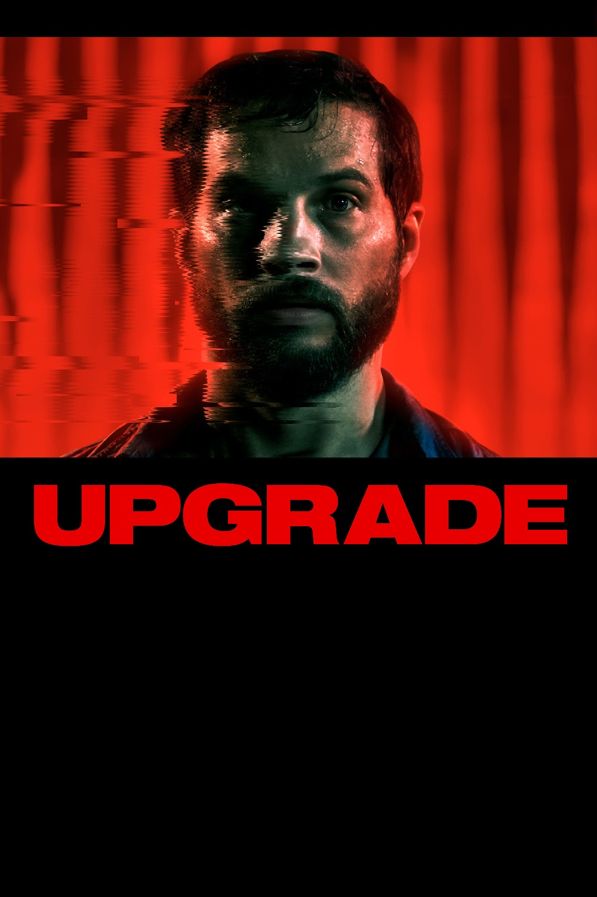

Мировая премьера: 1 июня 2018
Слоган: Не человек. Не машина. Нечто большее.
Сюжет: После жестокого нападения, в котором погибла его жена, а сам он остался паралитиком, Грея Трейса находит миллиардер-изобретатель, который предлагает ему лечение – "обновление" тела с помощью экспериментального чипа. Имплант с искусственным интеллектом под названием СТЕМ не просто возвращает Грею способность двигаться – он даёт его телу невероятные возможности и шанс отомстить убийцам жены, оставившим его умирать.
Режиссёр: Ли Уоннелл
В ролях:
| Логан Маршалл-Грин | Грей Трейс |
| Бетти Гэбриел | Детектив Кортес |
| Харрисон Гилбертсон | Эрон Кин |
| Мелани Вальехо | Аша Трейс |
| Бенедикт Харди | Фиск Брентнер |
| Линда Кроппер | Памела Трейс |
| Кристофер Кирби | Толан |
Бюджет: $ 5 млн.
Кассовые сборы в США: $ 12 млн.
Кассовые сборы в мире: $ 17 млн.
Продолжительность: 1 ч. 34 мин.
Рейтинг: 7.5